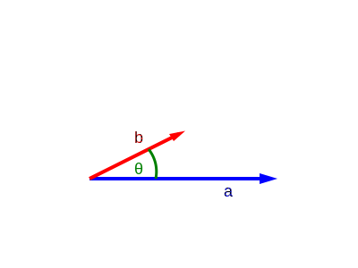
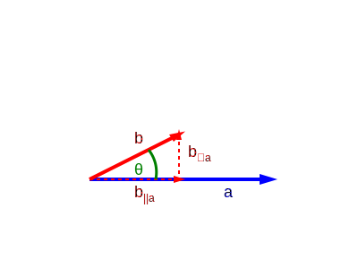
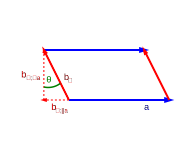

where we used the definition of vectors in terms of the basis vectors (i), distributivity (ii), linearity (iii), and sorted a sum into two sums (iv).
An alternative but equivalent geometric definition of the dot product is:
$$
a \cdot b = \|a\| \|b\| \cos\theta
$$
where $\theta$ is the angle between the two vectors.
In the diagram below, we can see vectors $a$ and $b$ along with the angle $\theta$
between them.

We can decompose vector $b$ into a part that is parallel to $a$ ($b_{\parallel a}$) and a
part that is orthogonal to $a$ ($b_{\perp a}$).

If we rotate vector $b$ by $90^\circ = \frac{\pi}{2}$ counterclockwise, we get a new vector $b_\perp$. We can
use this vector to form a parallelogram with vector $a$.

We can again decompose $b_\perp$ into a part that is parallel to $a$ ($b_{\perp;\parallel
a}$) and a part that is orthogonal to $a$ ($b_{\perp;\perp a}$).
We can see, that the area of the parallelogram is given by $\|b_{\perp;\perp a}\| \cdot
\|a\|$
Since we know $\|b\|=\|b_{\perp}\|$, we can use the prior two images to determine all the
magnitudes.
So we have seen, that the dot product $a \cdot b$ is given by the area of the parallelogram spanned by $a$ and $b_{\perp}$.
This way of thinking of the dot product enables some nice visual interpretations of the properties of the dot product:
The dot product of two orthogonal vectors is $a \cdot b = \|a\| \|b\| \cos(\frac{\pi}{2}) = \|a\| \|b\| \cos(-\frac{\pi}{2}) = 0$, since the area is a line.
The dot product of two codirectional vectors is $a \cdot b = \|a\| \|b\| \cos(0) = \|a\| \|b\|$ or $a \cdot b = \|a\| \|b\| \cos(\pi) = -\|a\| \|b\|$, since the area is a rectangle.
The dot product of a vector with itself is $a \cdot a = \|a\| \|a\| \cos(0) = \|a\|^2$
If we negate the direction of one of the vectors, the sign of the dot product changes.
You can see this by scaling one of the vectors through the origin and observing that the direction that one would go around the circumference of the parallelogram starting from $a$ reverses from counterclockwise to clockwise and vice versa.
The Wedge Product of Vectors
For two basis vectors $e_i$ and $e_j$, we define the wedge product $e_i \wedge e_j=\begin{cases}e_i\wedge e_j & , i \lt j\\ -e_i\wedge e_j & , i> j\\ 0 & , i=j\end{cases}$.
A canonical pair of non-equal basis vectors forms a basis bivector. A $d$-dimensional space
has $\binom{d}{2}$ basis bivectors. The magnitude of a basis bivector is $1$.
We use the canonical definition of the wedge product. Other conventions only differ in sign.
For $\mathbb{R}^3$, this canonical definition defines the basis $\{e_1 \wedge e_2, e_1
\wedge e_3, e_2 \wedge e_3\}$. A common alternative choice of basis is $\{e_1 \wedge e_2,
e_2 \wedge e_3, e_3 \wedge e_1\}$, which mimics the cyclic structure of the cross product
$e_1 \times e_2 = e_3, e_2 \times e_3 = e_1, e_3 \times e_1 = e_2$.
In 2D, the only two basis vectors are $e_1$ and $e_2$.
The wedge product has some basic properties:
Antisymmetry: $a \wedge b = - b \wedge a$
Linearity: $\alpha(a \wedge b) = (\alpha a) \wedge b = a \wedge (\alpha b)$ for any scalar
$\alpha$
Associativity: $a \wedge (b \wedge c) = (a \wedge b) \wedge c$
Distributivity: $a \wedge (b + c) = a \wedge b + a \wedge c$
We can use these properties to find the wedge product of any two vectors.
We can see, that we can express any bivector as a linear combination of the basis bivectors.
Each scalar $a_ib_j - a_jb_i$ is equivalent to the determinant of the linear transformation defined by the 2D components within the $ij$-plane. Since the determinant describes the signed area of the parallelogram spanned by these vectors, we can interpret a bivector as a collection of parallelograms spanned by the projections of $a$ and $b$ onto each basis plane. The sign of the scalar determines the orientation of the corresponding parallelogram. It is positive, if the path along the circumference of the parallelogram walking into the direction of $a$ first, is counterclockwise.
We denote the scalar associated with the basis bivector $e_i \wedge e_j$ as $\langle a \wedge b\rangle_{ij}$.
In $\mathbb{R}^2$, we only have one basis plane/bivector $e_1 \wedge e_2$. So the wedge product of two vectors $a, b \in \mathbb{R}^2$ is given by $a \wedge b = (a_1 b_2 - a_2 b_1)(e_1 \wedge e_2)$. This can geometrically be interpreted as the parallelogram spanned by the two vectors, where a counterclockwise orientation (going along $a$ first) corresponds to a positive sign.
The Geometric Product of Vectors
The geometric product of two vectors is defined as:
$$
ab = a \cdot b + a \wedge b
$$
For the geometric product of two basis vectors we get:
We can see that a basis wedge product $e_i \wedge e_j$ is equal to a basis geometric product $e_ie_j$ and that the geometric product of a basis vector with itself is $1$. This means that when we have a geometric product of more than two basis vectors, we can rearrange the order of different basis vectors by adding a negative sign exactly like we would for the wedge product, and we can replace the geometric product of a basis vector with itself by a scalar $1$.
For the geometric product between a vector $c$ and a geometric product $ab$ applied to the left, we get:
$$
\begin{align*}
abc &= (ab)c = (a \cdot b + a \wedge b)c \\
&= (a \cdot b)c + (a \wedge b)c \\
&= (a \cdot b)c + \sum_{i,j\in[1..d] | i \lt j} \langle a\wedge b\rangle_{i,j} (e_i \wedge e_j)c \\
&= (a \cdot b)c + \sum_{i,j\in[1..d] | i \lt j} \langle a\wedge b\rangle_{i,j} e_ie_jc \\
&= (a \cdot b)c + \sum_{i,j\in[1..d] | i \lt j} \langle a\wedge b\rangle_{i,j} e_ie_j\left(\sum_{k\in[1..d]} c_k e_k \right) \\
&= (a \cdot b)c + \sum_{i,j\in[1..d] | i \lt j} \langle a\wedge b\rangle_{i,j} \left(\sum_{k\in[1..d]} c_ke_ie_je_k \right) \\
&= (a \cdot b)c + \sum_{i,j\in[1..d] | i \lt j} \langle a\wedge b\rangle_{i,j} \left( \sum_{k\in[1..d] | k = i} c_ie_ie_je_i + \sum_{k\in[1..d] | k = j} c_je_ie_je_j + \sum_{k\in[1..d] | k \neq i,j} c_ke_ie_je_k \right) \\
&= (a \cdot b)c + \sum_{i,j\in[1..d] | i \lt j} \langle a\wedge b\rangle_{i,j} \left( c_ie_ie_je_i + c_je_ie_je_j + \sum_{k\in[1..d] | k \lt i \lt j} c_ke_ie_je_k + \sum_{i\lt k \lt j} c_ke_ie_je_k + \sum_{i\lt j \lt k} c_ke_ie_je_k \right) \\
&= (a \cdot b)c + \sum_{i,j\in[1..d] | i \lt j} \langle a\wedge b\rangle_{i,j} \left( -c_ie_ie_ie_j + c_je_ie_je_j + \sum_{k\in[1..d] | k \lt i \lt j} c_ke_ke_ie_j + \sum_{i\lt k \lt j} -c_ke_ie_ke_j + \sum_{i\lt j \lt k} c_ke_ie_je_k \right) \\
&= (a \cdot b)c + \sum_{i,j\in[1..d] | i \lt j} \langle a\wedge b\rangle_{i,j} \left( -c_ie_j + c_je_i + \sum_{k\in[1..d] | k \lt i \lt j} c_ke_ke_ie_j - \sum_{i\lt k \lt j} c_ke_ie_ke_j + \sum_{i\lt j \lt k} c_ke_ie_je_k \right) \\
&= (a \cdot b)c + \sum_{i,j\in[1..d] | i \lt j} \langle a\wedge b\rangle_{i,j} \left( -c_{\perp_{i,j}} + \sum_{k\in[1..d] | k \lt i \lt j} c_ke_ke_ie_j - \sum_{i\lt k \lt j} c_ke_ie_ke_j + \sum_{i\lt j \lt k} c_ke_ie_je_k \right)
\end{align*}
$$
The expression $-c_ie_j + c_je_i$ is a clockwise rotation by $\frac{\pi}{2}=90^\circ$ in the plane spanned by $e_i$ and $e_j$.
Similarly, if we apply the geometric product to the right, we get:
$$
\begin{align*}
cab &= c(ab) = c(a \cdot b + a \wedge b) \\
&= c(a \cdot b) + c(a \wedge b) \\
&= c(a \cdot b) + \sum_{i,j\in[1..d] | i \lt j} c\langle a\wedge b\rangle_{i,j} (e_i \wedge e_j) \\
&= (a\cdot b)c + \sum_{i,j\in[1..d] | i \lt j} \langle a\wedge b\rangle_{i,j} ce_ie_j \\
&= (a\cdot b)c + \sum_{i,j\in[1..d] | i \lt j} \langle a\wedge b\rangle_{i,j} \left( \sum_{k\in[1..d]} c_k e_k \right) e_i e_j \\
&= (a\cdot b)c + \sum_{i,j\in[1..d] | i \lt j} \langle a\wedge b\rangle_{i,j} \left( \sum_{k\in[1..d]} c_k e_k e_i e_j \right) \\
&= (a\cdot b)c + \sum_{i,j\in[1..d] | i \lt j} \langle a\wedge b\rangle_{i,j} \left( \sum_{k\in[1..d] | k = i} c_ie_ie_ie_j + \sum_{k\in[1..d] | k = j} c_je_je_ie_j + \sum_{k\in[1..d] | k \neq i,j} c_ke_ke_ie_j \right) \\
&= (a\cdot b)c + \sum_{i,j\in[1..d] | i \lt j} \langle a\wedge b\rangle_{i,j} \left( c_ie_ie_ie_j + c_je_je_ie_j + \sum_{k\in[1..d] | k \lt i \lt j} c_ke_ke_ie_j + \sum_{i\lt k \lt j} c_ke_ke_ie_j + \sum_{i\lt j \lt k} c_ke_ke_ie_j \right) \\
&= (a\cdot b)c + \sum_{i,j\in[1..d] | i \lt j} \langle a\wedge b\rangle_{i,j} \left( c_ie_ie_ie_j - c_je_ie_je_j + \sum_{k\in[1..d] | k \lt i \lt j} c_ke_ke_ie_j + \sum_{i\lt k \lt j} -c_ke_ie_ke_j + \sum_{i\lt j \lt k} c_ke_ie_je_k \right) \\
&= (a\cdot b)c + \sum_{i,j\in[1..d] | i \lt j} \langle a\wedge b\rangle_{i,j} \left( c_ie_j - c_je_i + \sum_{k\in[1..d] | k \lt i \lt j} c_ke_ke_ie_j - \sum_{i\lt k \lt j} c_ke_ie_ke_j + \sum_{i\lt j \lt k} c_ke_ie_je_k \right) \\
&= (a\cdot b)c + \sum_{i,j\in[1..d] | i \lt j} \langle a\wedge b\rangle_{i,j} \left( c_{\perp_{i,j}} + \sum_{k\in[1..d] | k \lt i \lt j} c_ke_ke_ie_j - \sum_{i\lt k \lt j} c_ke_ie_ke_j + \sum_{i\lt j \lt k} c_ke_ie_je_k \right)
\end{align*}
$$
We can see that applying the geometric product to the left or right only differs in the component that is made up of the vectors that are orthogonal to c on each plane. This means that applying the geometric product to the left or right will yield a vector that is mirrored across $c$.
We can see that the magnitude of the geometric product of three vectors is equal to the product of their magnitudes. This also means, that if we choose $a$ and $b$ to be unit vectors, the geometric product will have magnitude equal to that of $c$
Verify that the product is rotated by the angle between $a$ and $b$, by aligning $c$ with either of the vectors.
In summary: The geometric product $ab$ in $\mathbb{R}^2$ represents a rotation by the angle between $a$ and $b$, and a scaling by the product of their magnitudes.